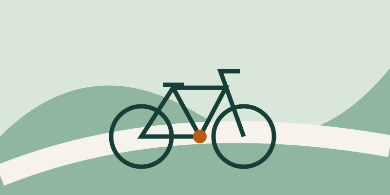

Набережная
Ровная дорога вдоль реки: 12 км в спокойном темпе.
Посмотреть расписаниеПрисоединяйся к короткой прогулке в выходной.
Выбрать маршрутРовная дорога вдоль реки: 12 км в спокойном темпе.
Посмотреть расписаниеПарковые дорожки и остановки для фотографий: 18 км.
Посмотреть расписаниеНебольшие улицы, архитектура и кофе на финише: 9 км.
Посмотреть расписаниеМаршрут по набережной подходит для неспешного знакомства с городом.

Мы исследуем город на велосипеде, выбираем спокойные маршруты и помогаем новичкам подготовиться к первой поездке.
| День | Время | Маршрут |
|---|---|---|
| Суббота | 10:00 | Набережная |
| Воскресенье | 11:30 | Зелёное кольцо |